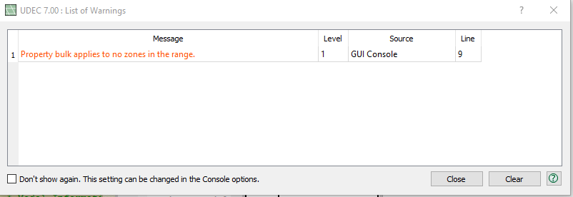

List of Warnings Dialog
This dialog is shown when a warning occurs if the “Raise Dialog on Warning” setting is checked in the Console section of the Options dialog.

Figure 1: The List of Warnings dialog.
Table Elements
- #
- Each message is numbered in order of occurrence.
- Message
- Description of the error or warning encountered.
- Level
- The severity of the warning, from 0 (most urgent) to 8 (least urgent).
- Source
- The source of the message, if available.
- Line
- The line number where the error occurred, if available.
This dialog is an alternative to console output in the i Console pane as a means for viewing warning messages as they occur during program operation. Its use is optional according to user preference, as described below. As an alternative, it has two advantages.
- The dialog provides error and warning output when the Console pane may is hidden, minimize, or simply out of view (see “Note” below).
- With warning and errors pulled from the output stream and sent to the dialog, it is less likely that these messages will be lost or missed when they occur in the middle of large amounts of standard output in the Console pane.
Preferences
- To prevent appearance:
- uncheck the “Raise Dialog on Warning” box in the Console Options page of the Options dialog. (This operation is performed from within the List of Warnings dialog when “Don’t show again…” is checked.)
- To set “Warning Level”:
- enter a value (from 0-8) in the edit box adjacent to the “Raise Dialog” checkbox. The dialog is shown only for errors lower than than the value given (i.e., “0” will show all errors since it is the lowest possible, “4” will show error levels 0-3, etc.).
Note
This dialog may be left open alongside the program as it is in use. If it is closed, it will reopen at the next new warning condition that occurs in command processing.
| Was this helpful? ... | UDEC © 2018, Itasca | Updated: Mar 15, 2024 |